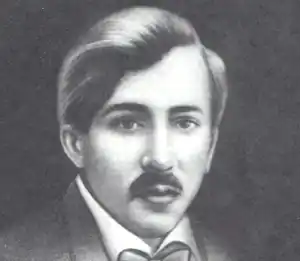

Олександр Олесь
(1878 — 1944)
Складний життєвий шлях випав на долю Олександра Олеся (справжнє прізвище — Кандиба). Народився він в с. Крига (Білопілля) на Сумщині, закінчив Харківський ветеринарний інститут, працював у Харкові та Києві (1909 — 1919). У 1907р. у Петербурзі вийшла перша книга Олеся — "З журбою радість обнялась", що принесла славу молодому поетові. В наступні роки з'являються нові збірки — "Поезії. Книга II" (1909), "Поезії. Книга III" (1911), "Драматичні етюди. Книга IV" (1914), "Поезії. Книга V" (1917). Не набувши чітких політичних орієнтирів, Олесь після Великої Жовтневої соціалістичної революції опиняється за кордоном (1919). Еміграція стала трагедією життя Олеся. Настрої пригніченості, нудьги і самотності наповнюють першу "закордонну" збірку віршів Олеся — "Чужиною" (Відень, 1919). "В вигнанні дні течуть, як сльози..." — такими словами розпочинається один з перших віршів книги. Невдовзі, у 1921р., виходить "Перезва" — збірка гостросатиричних віршових творів, що викривають життя, побут і політичні принципи емігрантської громади. Збірку (з'явилась у світ тільки перша частина її) поет видав під псевдонімом. Верховоди емігрантських кіл стали на перешкоді публікації нових віршів такого характеру. Почуття людини, позбавленої рідного дому, поглиблюються. В одному з віршів поет уявляє себе мертвим, але похованим в рідному краю, проте доля вигнанця гірша, ніж доля мерця. Проте поет так і не спромігся на остаточні висновки чи рішення. Гостро-емоційно сприймаючи удари долі, він ладен вбачати у них непоясниме наслання, прокляття. В останні десятиріччя життя Олесь усувається від будь-якої участі в заходах, здійснюваних українською еміграцією, послаблюється активність його поетичної творчості, він займається переважно інсценізацією народних казок, написанням лібретто для дитячих опер. Помер письменник у Празі 1944р. Творча спадщина Олеся досить велика якщо врахувати, що більшу частину її становить поезія — дев'ять книг (звертався Олесь і до драматичного жанру, створивши ряд драматичних поем та етюдів). В українську літературу Олесь входить як поет, що розширив тематичний, стильовий, настроєвий діапазони лірики, підніс виражальну силу українського художнього слова. Не будучи "модерністом" ні за організаційною приналежністю, ні по суті, Олесь вніс новаторські моменти в розвиток української поезії. Не вдаючись до будь-яких маніфестів, декларацій, він своєю творчістю наголосив на естетичній цінності поетичного твору, рішуче заперечив абстрактну декламаційність, хоч би якими завданнями вона надихалась. Загалом не нова на поетичні ідеї, віршові прийоми і навіть образи (взяті номенклатурне, самі по собі), поезія Олеся уже з виходом першої збірки завоювала прихильність знавців літератури і масового інтелігентного читача. У ній були представлені безпосередність і щирість поетичного вислову, глибокий внутрішній драматизм почуття, багатство мінливих відтінків настрою. Життя природи, кохання, перипетії громадської боротьби — основна тематика першої збірки, що надовго визначила й тематику творчого доробку поета. Надзвичайно вразливе, діткливе "я" ліричного героя Олеся однаково чутливо резонує на найменші перепади у стосунках з коханою, на зміни в настроях мас, на рух у рослинному й тваринному світі, атмосфері. Всеосяжність сфер поетового почуття відбита інколи в межах одного й того ж твору ("Цілий день ти нудилась в кімнаті своїй", "Погасло сонце ласки і тепла" та ін.). Легкий, майже невагомий перехід від одного зовнішнього явища до іншого, а від них — до стану власної душі притаманний багатьом творам Олеся ("Сніг в гаю... але весною", "Дві хмароньки пливли кудись", "В міщанській одіжі і в рідному вінку", "Зима... і пролісок блакитний!", "На гори високі, на срібло снігів" та ін.). Суб'єктивне враження і сприйняття покладено і в основу його громадянської лірики. Поет відобразив народне — і водночас власне — пробудження в роки революції ("Сонце на обрії, ранок встає", "Ти знову у мене окрилюєш мрії", "Я більше не плачу..."), оспівав червоний прапор боротьби ("Воля!? Воля?! Сниться, може?", "1 Мая"). Однак у віршах Олеся не знайти концептуального осмислення революційної боротьби: йдеться, звичайно, не про декларативне висунення якихось віршових "програм" (такі поетичні форми органічно чужі для Олеся), а про широкий політичний світогляд. Він у поезії Олеся відсутній навіть там, де мова заходить про кінцеву мету революції, про поетове слово у ній. Тут багато непідробного пафосу, ліричної виразності, але не досить політичної конкретності. В образній системі Олеся наявні релікти народницької символіки, окремих народницьких мотивів (зокрема, з Надсона). Проте навіть ці штампи невпізнанне трансформуються у тонкому суб'єктивному почутті. Не подаючи політичної концепції, громадянська поезія Олеся цікава як суб'єктивний документ суспільної боротьби епохи. Дуже вразлива, можна сказати, тендітна душа ліричного героя хворобливо реагує на всі перипетії цієї боротьби. Героя повергають у розпач тимчасові поразки, розправи, репресії ("Хто ви, хто ви з нагаями?..", "Над трупами", "Капітану Шмідту", "Міцно і солодко, кров'ю упившись..."), йому дорога найменша надія на перемогу ("Сонце на обрії, ранок встає", "Вони — обідрані, розбуті"). Громадянські настрої й переживання поета у найрізноманітніші способи (метафоричні асоціації, алегоричні паралелі, композиційні зіставлення в межах твору, циклу, збірки віршів) перегукуються з образами природи, поєднуються з колізіями особистого, внутрішнього життя. На відміну від ліричного героя П. Грабовського герой лірики Олеся не є безпосереднім учасником боротьби (крім інших якостей, йому бракує твердості волі), але надзвичайно співчутливо й зацікавлено її відображає. В основі художнього світу Олеся, створюваного інтимною лірикою (та й лірикою громадянського характеру), лежить неоромантичне протиставлення дійсного життя, з одного боку, і мрій та сподівань героя — з другого. Неоромантичним є популярний у творах Олеся мотив дочасного чи вражаюче-короткочасного буяння ("Айстри", "Єсть дивні лілеї, що вранці родившись", "Єсть квіти такі, що ніколи не квітнуть" та ін.). Саме цей "єдиний раз" квітування гармонійно перенесено Олесем на любовну тематику: "Квітки любові розцвітають єдиний раз, єдиний раз". Поет воєдино зливає контрастні поняття: мовиться про біль, муки, кров, рани, і все це стає ще болючішим від того, що з них проростає "ніжність" і "жаль", що все це здійснюється в пошуках тієї "ніжності", відсутність якої скрушно переживається. У змалюванні любові Олесем немає різких, контрастних барв, що йдуть, як правило, від гостроти самоусвідомлення (лірика Франка, Лесі Українки, почасти й Маковея), але поза цим трактування любові в нього досить різноманітне: це й безнадійне кохання, і зовнішніми умовами спричинена недосяжність любові, і таємнича приреченість закоханих не мати одне одного, і нарешті, радісно-тріумфуюче проникнення любові в серце, що сповняє собою всю істоту і природу загалом. Природа в ліриці Олеся виступає не просто зовнішнім аналогом чи тлом переживань людини: поету притаманний своєрідний поетичний пантеїзм — розлиття почуттів (і взагалі особистості) в житті квітів, трав, сонячного проміння. Саме завдяки високому ступеневі нероз'єднаності емоцій людини й природи остання в поета мало конкретизована описово (переважають загальні назви — пташки, квіти — або ж назви, що встигли стати штампами—солов'ї, жайворонки, орли). Однак природа в поезії Олеся живе дуже виразним життям. За всієї недеталізованості описів поет тонко передає її порухи й настрої, відображення природи у нього переважно музичне, з очевидно відчутними ритмами. Кращими зразками пейзажної лірики Олеся є ряд віршів із циклу "Щороку" (третя книга), де змальовано річний круговорот природи. Привертають увагу інтонаційні засоби, якими передано рух. Ліричні твори Олеся, музикальні, часто "романсові" за формою, віддавна привертали увагу композиторів — М. Лисенка ("Сміються, плачуть солов'ї", "Айстри", "Гроза пройшла... зітхнули трави"), К. Стеценка ("Сосна"), Я. Степового ("Не беріть із зеленого лугу верби"), С. Людкевича ("Тайна") та ін. У драматичних творах Олеся ("По дорозі в Казку", "Трагедія серця", "Над Дніпром", "Ніч на полонині" тощо) ще виразніше, ніж у поезії, проявилась неоромантична концепція. Юнак, герой драматичного етюда "По дорозі в Казку", веде юрбу безвольних людей з темного лісу в напрямі сонячної країни. Він один здатен визначати дорогу по червоних маках, що виросли з крові його попередників. Розкривши груди, проламує він шлях юрбі, але за кілька кроків до мети на мить занепадає духом, піддається сумнівам щодо вірності напряму — і цього достатньо, щоб натовп розчарувався в обожнюваному героєві і повернув назад. Цей драматичний етюд, як і інші, має сюжетно-образну спільність з драматургією М. Метерлінка, Г. Гауптмана, Лесі Українки, Я. Райніса, з романтичними творами М. Горького. Відомий Олесь і як талановитий перекладач ("Пісня про Гайявату" Г. Лонгфелло, казки В. Гауфа, ліричні твори поетів багатьох країн). Творчість Олеся — визначне явище в українській літературі перших двох десятиріч XX ст. М. Рильський писав: "Нема ніякого сумніву, що поезія Олександра Олеся позначилася сильними своїми сторонами на розвитку української літератури, отже й радянської української літератури. Зі смутком визнаючи його вільні і невільні провини, хибні його кроки, в яких сам він гірко каявся, шкодуючи, що така дужа творча індивідуальність не дістала повного свого розвитку, ми повинні, проте, сказати, що поет Олександр Олесь посідає певне місце в історії нашої культури і що все краще з його спадщини повинно стати набутком нашого радянського читача".